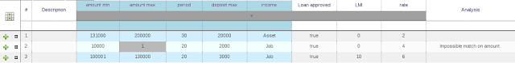
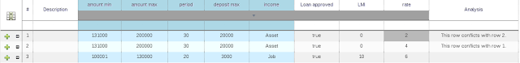
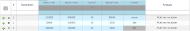
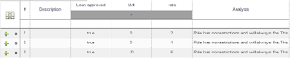

Validation and Verification for Decision Tables
The decision tables are getting even more improvements than the UI work Michael has been working on.
Zooming and Panning between Multiple Huge Interconnected Decision Tables
Cell Merging, Collapsing and Sorting with Multiple Large Interconnected Decision Tables
I am currently working on improving the validation and verification of the decision tables. Making it real time and improving the existing V&V checks.
Validation and verification are used to determine if the given rules are complete and to look for any bugs in the dtable authors logic. More about this subject.
Features coming in the next release
Real time Verification & Validation
Previously the user had to press a button to know if the dtable was valid or not. Now the editor does the check in real time, removing the need to constantly hit the Validate-button. This also makes the V&V faster, since there is no need to validate the entire table, just check how the change of a field affected the rest of the table.

Finding Redundancy
To put it simple: two rows that are equal are redundant, but redundancy can be more complicated. The longer explanation is: redundancy exists when two rows do the same actions when they are given the same set of facts.
Redundancy might not be a problem if the redundant rules are setting a value on an existing fact, this just sets the value twice. Problems occur when the two rules increase a counter or add more facts into the working memory. In both cases the other row is not needed.
Finding Subsumption
Subsumption exists when one row does the same thing as another, with a sub set of the values/facts of another rule. In the simple example below I have a case where a fact that has the max deposit below 2000 fires both rows.
The problems with subsumption are similar to the case with redundancy.
Finding Conflicts
Conflicts can exists either on a single row or between rows.
A single row conflict prevent the row actions from ever being executed.
 |
| Single row conflict – second row checks that amount is greater than 10000 and below 1 |
Conflict between two rows exists when the conditions of two rules are met with a same set of facts, but the actions set existing fact fields to different values. The conditions might be redundant or just subsumptant.
The problem here is, how do we know what action is made last? In the example below: Will the rate be set to 2 or 4 in the end? Without going into the details, the end result may be different on each run and with each software version.
 |
| Two conflicting rows – both rows change the same fact to a different value |
Reporting Missing Columns
In some cases, usually by accident, the user can delete all the condition or action columns.
When the conditions are removed all the actions are executed and when the actions columns are missing the rows do nothing.
 | |
| The action columns are missing |
 |
| The condition columns are missing |
What to expect in the future releases?
Better reporting
As seen on the examples above. Reporting the issues is currently poor.
The report should let the user know how serious the issue is, why it is happening and how to fix it.
The different issue levels will be:
- Error – Serious fault. It is clear that the author is doing something wrong. Conflicts are a good example of errors.
- Warning – These are most likely serious faults. They do not prevent the dtable from working, but need to be double checked by the dtable author. Redundant/subsumptant rules for example, maybe the actions need to happen twice in some cases.
- Info – The author might not want to have any conditions in the dtable. If the conditions are missing each action gets executed. This can be used to insert a set of facts into the working memory. Still it is good to inform that the conditions might have been deleted by accident.
Finding Deficiency
Deficiency gives the same kind of trouble that conflicts did. The conditions are too loose and the actions conflict.
For example:
If the loan amount is less than 2000 we do not accept it.
If the person has a job we approve the loan.
The problem is, we might have people with jobs asking for loans that are under 2000. Sometimes they get them, sometimes they do not.
Finding Missing Ranges and Rows
Is the table complete? In our previous examples we used the dtable to see if the loan application gets approved. One row in the dtable should always activate, no matter how the user fills out his loan application. Either rejecting or approving the loan or else the applicant does not get a loan decision.
The goal of the V&V tool will be to find these gaps for the dtable author.
Finding Cycles
The actions can insert new facts and the conditions trigger the actions when new facts are inserted. This can cause an infinite number of activations.
This issue is a common mistake that the goal is to pick it up in the authoring phase with the V&V tool.

{kind=link}
{kind=link}
{kind=link}
{kind=link}
{kind=link}
{kind=link}
{kind=link}